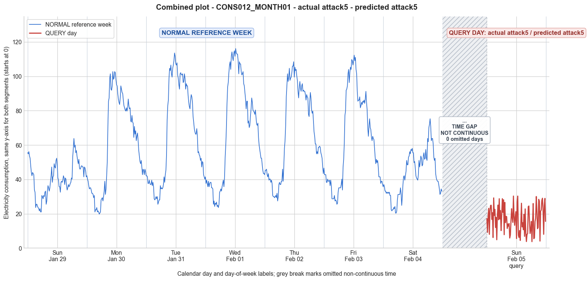

CONS012_MONTH01 · actual attack5 · predicted attack5
- Pair
- CONS012_MONTH01
- GT
- attack5
- Prediction
- attack5
- Binary GT
- attacked
- Binary Prediction
- attacked
- Source
- E010
- Parse
- stored
- Date
- 2012-02-05
- Weekday
- Sunday
- Latency
- 3.69 min
- Tokens
- 12769

Final output
Classification: Manipulated Identified Attack: - Most Likely: Attack 5 - Confidence: Medium - Reasoning: The query day's consumption is drastically lower than any reference day (mean 16.95 vs. Sunday reference mean 40.58, min 3.77 vs. 21.06). The pattern does not match a simply scaled version of the original Sunday profile (ruling out Attacks 1 and 3); there are no zero values or zeroed intervals (ruling out Attacks 0, 2, IEEE); no constant flatline or cut‑off saturation (ruling out Attacks 6, 7, 9, 10); and the profile is not a plausible real customer’s low‑consumption pattern (ruling out Attack 12). Instead, the sequence appears synthetic and irregular, with frequent large spikes and drops (e.g., 30.29 to 7.47 in 15 minutes) that do not correlate with the timing of peaks in the normal week. This randomness aligns with Attack 5, where each sample is independently replaced by a random fraction of the normal consumption, producing a completely unrelated and erratic series. Attack 3 was the primary alternative considered but the lack of any resemblance to the original temporal structure made it unlikely. Attack_Behavior_Explanation: - How consumption values are manipulated relative to the normal week: Each 15‑minute reading is replaced by a false value computed as (average normal consumption) × (independent random number between 0 and 1). Here the likely normal average is the Sunday reference (~40.58), resulting in values scattered between 0 and ~40.58. The replacement is applied uniformly across the entire day, erasing all genuine consumption dynamics. - Impact on magnitude and trend: The mean drops by roughly 60%, and the standard deviation decreases slightly (from ~9.88 to 7.64), but the key effect is the total loss of the original trend. The new pattern shows no daily rhythm, with abrupt, unrealistic changes from one interval to the next. - Possible technical causes: False data injection (e.g., compromised meter firmware, communication layer attacks, or malicious remote reprogramming) that substitutes the true measurements with random, low‑value readings to create a fraudulent billing profile.
Prompt
You are a domain expert in smart grid security and electricity theft analysis, with deep knowledge of non-technical loss (NTL) attack patterns in smart meters. You are given: 1. A plot of one week of original (normal) energy consumption for a smart meter, provided as context for the customer's typical consumption behavior. 2. A plot of one day of energy consumption for the same smart meter, which may or may not be manipulated. Below are common attack types, each defined by how consumption values are altered, their impact on magnitude and trend, and their possible technical causes. Attack 0: Generated by replacing all electricity consumption samples with zero values for the entire observation duration. Simulates a scenario where no energy usage is reported at all. May be caused by a total meter bypass or severe meter malfunction. Completely eliminates both the trend and magnitude of the consumption profile. Attack 1: Multiplies the actual energy consumption by a constant random value between (0,1). The lower the factor, the higher the severity. Can be triggered by meter bypass, magnetic interference, reverse current, and false data injection. The consumption trend remains the same but the magnitude is uniformly reduced. Attack 2: Generated by replacing consumption samples with zeros for a random duration. Also known as an on-off attack. Can be caused by full meter bypass, false data injection, and reverse current. Changes both the trend and amplitude. Attack 3: The actual consumption is multiplied by different random factors between 0 and 1, with a unique factor per sample. Similar to Attack 1 but the scaling factor varies per reading. Caused by meter bypass, magnetic interference, and reverse current. Changes both the trend and amplitude. Attack 4: Simulates energy theft over a randomly selected period within the observation window. All measurements in that period are reduced. Caused by meter bypass, magnetic interference, reverse current, and false data injection. Changes both the trend and amplitude. Attack 5: Each sample is replaced by a false value obtained by multiplying the average normal consumption by a random variable between 0 and 1, with a different variable per sample. Caused by false data injection. Produces a completely different pattern from the original consumption profile, changing both trend and magnitude. Attack 6: A random cut-off point is selected and all consumption values above it are replaced by that cut-off value. The attacker avoids exceeding a predefined maximum limit. Mainly caused by false data injection. Changes both the trend and amplitude. Attack 7: A random cut-off point is subtracted from each sample; if the result is negative, zero is reported. Similar to Attack 6 but replaces exceeding values with zero instead of the cut-off point. May be caused by false data injection or total meter bypass. Does not change the trend but reduces overall consumption. Attack 9: All samples are replaced by the average daily energy consumption, resulting in a flat constant profile. Easily detectable because constant consumption does not reflect normal customer behavior. Caused by false data injection. Eliminates all trends. Attack 10: Reverses the consumption pattern without reducing the total amount. Applicable when the electricity company uses time-varying pricing, allowing the attacker to shift high consumption to off-peak periods. Caused by false data injection. Changes the trend without decreasing total consumption. Attack 12: The attacker replaces their consumption pattern with that of a lower-consuming user. The legitimate user unknowingly pays the adversary's electricity bill. Caused by false data injection. Attack IEEE: For each 15-minute interval across the entire day, the consumer either reports the actual electricity consumption or substitutes it with zero. The result is a profile where some intervals reflect real consumption while others are zeroed out, creating an irregular pattern across the full day. May be caused by false data injection. Changes both the trend and amplitude. Given the two plots, determine: 1. Whether the day is attacked or original - compare the flagged day against the normal week and assess whether the consumption pattern is consistent with normal behavior or shows signs of manipulation. If the day is consistent with the customer's typical consumption behavior, classify it as original and provide no further analysis. If manipulation is detected, proceed to point 2. 2. Which attack type this most likely is - identify the single most probable attack and justify your choice based on how the flagged day deviates from the normal week. 3. The behavior of the identified attack - explain how the consumption values are manipulated, their impact on magnitude and trend, and the possible technical causes behind this type of attack. Output Format: Classification: - Original | Manipulated Identified Attack: (fill only if manipulated) - Most Likely: Attack X - Confidence: High | Medium | Low - Reasoning: Why it matches Attack X and why Attack Y and Attack Z were ruled out (list top 2 alternatives considered) Attack_Behavior_Explanation: (fill only if manipulated) - How consumption values are manipulated relative to the normal week - Impact on magnitude and trend - Possible technical causes
Reasoning content
We are given: Reference week: 7 days of meter readings (96 per day, 15-min intervals). Query day: also 96 readings. We have per-day stats: Query day min=3.77, max=30.31, std=7.64, mean=16.95. Reference week days have min around 19-27, max around 63-116, mean around 40-68. So query day is drastically lower in both min, max, mean, and std. It's clearly much lower consumption. Also note the day-of-week for query day: dow=6 (Sunday?), and cal_month=2, dom=7. Reference week Day 0 was also Sunday? Actually reference Day 0: cal_month=1, dow=6, dom=0. So both are Sundays, but query day is the following Sunday? Day 6 of reference week: dow=5, dom=6 (Friday). So query day is a Sunday but different month? Possibly. Compare reference Day 0 (Sunday) stats: min=21.06, max=63.82, mean=40.58. Query day mean=16.95, far lower. So definitely manipulated; it's not consistent with normal behavior. Now identify attack type. The query day values are all over the place: many low values but not all zero. There's no obvious flat line or constant pattern; it has variability. The range is 3.77 to 30.31. In reference week, Sunday had values from 21 to 63. So it's a reduction everywhere. Let's examine scaling: If we multiply the normal consumption by a factor, we could get lower values. But the pattern shape might be preserved. Compare shape: Reference Sunday (Day 0) values: starting at 55.52, 54.88, ... then dropping at night to ~21, then rising again. Query day starts at 17.19, 9.17, etc. Not obviously following same shape. Let's look at overall profile: reference day has typical two-peak or three-peak pattern? It's a household. The query day seems to have some spikes, like 30.31, 30.29, 28.75, etc. It doesn't look like a simple scaling of the reference Sunday. Perhaps it's Attack 4: theft over a randomly selected period, but the query day entire period seems reduced overall, not just a period. Attack 2: replacing with zeros for random durations - there are no zeros, min=3.77, so not zeros. Attack 0: all zeros - no. Attack 1: constant factor between 0 and 1 - could be, but if factor is constant, the shape should be exactly scaled. Let's check if shape matches. Compute approximate factor: mean ratio = 16.95/40.58 ≈ 0.418. If we scale Day 0 by 0.418, what would be min and max? min=21.06*0.418 ≈ 8.8, max=63.82*0.418 ≈ 26.7. Query day min=3.77, max=30.31, so min is lower, max higher, so not a constant scaling. Attack 3: multiply by different random factors per sample. That would produce a pattern that varies per sample, shape might be distorted. Attack 5: each sample replaced by average normal consumption * random[0,1]. That would make the pattern completely unrelated to the original, just random values around average*random. The query day values look somewhat random but not entirely; there are spikes and drops, maybe somewhat correlated to time-of-day? Let's inspect the sequence: 17.19, 9.17, 18.88, 23.18, 8.03, 21.45, 24.89, 24.95, ... there are peaks around 24-30, drops to 3-10. This seems like a pattern where consumption is kept low but with some random variability. Attack 6: cut-off: all values above a cut-off replaced by cut-off. In reference Sunday, max 63.82, if cut-off were e.g. 30, then all values above 30 would become 30. That would produce a max of 30 (or maybe 30.31 if cut-off exactly 30.31?). But then many values would be exactly 30 or the cut-off. In query day, we see max=30.31, and other values like 30.29, 30.03, 28.78, etc. Not all exactly the same. Attack 7: subtract cut-off, if negative report zero. That would shift all values down by a constant. If we subtract e.g. 20 from reference Sunday, min would become 1.06, max 43.82. But query day min=3.77, max=30.31. Not matching. Attack 9: constant average - not. Attack 10: reverse pattern - no. Attack 12: replace with another user's pattern - possible but unlikely given the context. Attack IEEE: some intervals real, some zeroed out. That would produce zero values in some intervals. Here, no zeros; all >0. So not IEEE. Given the description: Attack 3 multiplies by different random factors between 0 and 1 per sample. That would cause a distorted shape but generally reduced. Attack 4: theft over a randomly selected period where measurements are reduced. That could be like a block of time where consumption is replaced with lower values, but the rest normal. In query day, all values are lower than reference Sunday; there's no block that matches normal. The max is 30.31 vs reference min 21.06, so even the lowest value in reference Sunday is higher than many query day values? Actually reference Sunday min=21.06, query day max=30.31, so there is overlap? No, reference Sunday min is 21.06, query day max is 30.31; query day values range 3.77-30.31. So query day values are mostly lower than reference Sunday values, but some are higher than the reference min. That's possible if attack reduces mostly but with some random fluctuation. Attack 4 is described: "Simulates energy theft over a randomly selected period within the observation window. All measurements in that period are reduced." So there is a period where readings are reduced, but outside that period they are normal. In query day, there is no normal period; all readings seem reduced relative to typical Sunday (mean 40.58). So Attack 4 would have some readings at original level. Not seen. Attack 6 (cut-off) would cause a flat top at cut-off value. Query day has a maximum of 30.31, but not many identical values at that max. Actually there are a few near 30: 30.31, 30.29, 30.03, 28.78, 28.75, 28.40, 28.93... Not all identical, but could be cut-off with some noise? Attack 6 says "replaced by that cut-off value", so they would be exactly the cut-off. Here, they vary slightly, so maybe not. Attack 1 is constant factor, which we ruled out due to min/max mismatch. Attack 3 is different random factors per sample. That seems plausible: each reading multiplied by a unique random number in (0,1). That would yield a noisy pattern with reduced mean. The query day's std of 7.64 vs reference Sunday std 9.88 - scaling by random factors would reduce std as well, but not proportionally because each factor varies. Could produce the pattern. Attack 5: replace with average * random[0,1] per sample. That would give a mean of about half of average consumption (average random 0.5). The average daily consumption for reference week? Let's compute overall average across all days? Or they might use average normal consumption of the meter. It says "multiplying the average normal consumption by a random variable between 0 and 1". That would produce completely random values not tied to time-of-day. Query day seems to have some structure: early morning values lower? For example, start: 17.19 at midnight? Then drops to 9.17, etc. It's not completely flat random; there are variations that might reflect some daily pattern. Let's examine typical Sunday pattern: reference Sunday: high in the morning (~55), drops, then evening peak (~63). Query day: first few: 17, 9, 18, 23, 8, 21, 24, 24, ... then later around 15:00? Not clear. The max 30.31 occurs at index? The list of 96 values: I'll number them as 0-95 for 15-min intervals. Index 0: 17.19, 1:9.17, 2:18.88, 3:23.18, 4:8.03, 5:21.45, 6:24.89, 7:24.95, 8:16.72, 9:20.65, 10:6.18, 11:29.23, 12:19.03, 13:22.58, 14:12.00, 15:17.89, 16:4.88, 17:19.41, 18:25.07, 19:16.52, 20:28.75, 21:16.94, 22:21.89, 23:10.20, 24:18.92, 25:28.78, 26:20.79, 27:28.15, 28:7.82, 29:26.65, 30:14.84, 31:18.54, 32:18.29, 33:11.48, 34:14.06, 35:12.78, 36:14.33, 37:5.89, 38:7.62, 39:15.69, 40:22.95, 41:17.68, 42:14.99, 43:30.31, 44:18.03, 45:13.29, 46:18.53, 47:21.24, 48:5.57, 49:26.86, 50:30.29, 51:7.47, 52:6.25, 53:10.21, 54:4.48, 55:14.22, 56:26.13, 57:12.36, 58:14.82, 59:10.69, 60:19.71, 61:6.86, 62:22.83, 63:9.10, 64:3.83, 65:8.05, 66:8.42, 67:24.13, 68:24.53, 69:15.23, 70:8.53, 71:11.03, 72:15.55, 73:3.77, 74:14.57, 75:25.95, 76:5.50, 77:5.91, 78:15.43, 79:17.39, 80:30.03, 81:21.60, 82:11.32, 83:11.99, 84:28.40, 85:27.32, 86:4.11, 87:21.53, 88:22.13, 89:27.81, 90:29.05, 91:21.82, 92:8.05, 93:24.65, 94:28.93, 95:15.58. This looks somewhat random, but there are spikes at similar times: peaks around indices 11 (29.23), 20 (28.75), 25 (28.78), 43 (30.31), 50 (30.29), 56 (26.13), 80 (30.03), 84 (28.40), 89 (27.81), 90 (29.05), 94 (28.93). The reference Sunday peaks: morning? Reference Day 0: indices: 0:55.52, then decline, low around 22:18? Let's map: 0-95. Reference Sunday: I see peaks: index 0-2: ~55, then drops, low around index 15-21: ~21-25, then rise to peak around index 73-75: 63.82, 58.71, 59.99? Actually reference Day 0: 72:52.97, 73:58.07, 74:63.82, 75:58.71, 76:59.99, 77:55.52. So evening peak around indices 73-76. In query day, there is no clear correspondence. The query day peaks seem more frequent. This does not resemble a scaled version of reference Sunday. It seems more like a completely different pattern, perhaps generated by Attack 5: each sample replaced by average normal consumption * random. But which average? "Average normal consumption" likely refers to the average daily consumption of that meter over the week. Compute overall average daily mean from reference week: Day 0:40.58, Day1:60.58, Day2:67.13, Day3:68.50, Day4:67.66, Day5:63.52, Day6:42.96. Average of these means = (40.58+60.58+67.13+68.50+67.66+63.52+42.96)/7 = about 59.13? Actually sum = 40.58+60.58=101.16, +67.13=168.29, +68.50=236.79, +67.66=304.45, +63.52=367.97, +42.96=410.93. /7 = 58.70. If each sample is replaced by 58.70 * random[0,1], the mean would be about 29.35, but query day mean is 16.95, lower. Could be a different average? Possibly using only nightly average or something? Attack 5 says "Each sample is replaced by a false value obtained by multiplying the average normal consumption by a random variable between 0 and 1". It doesn't specify which average; it could be the average of that meter over time. But the average of the entire week might be around 58.70, giving random values 0-58.7. Query day max is 30.31, so if max random factor is near 1, 58.7 would yield max 58.7, but it's only 30. So maybe the "average normal consumption" is not the overall mean but perhaps a lower base? Or maybe it's the average consumption of the same day of week? Sunday average was 40.58. If average = 40.58, random[0,1] would give max 40.58, but max is 30.31, so plausible if the max random factor was ~0.75. The mean would be 20.29, close to 16.95. So it could be Attack 5 with average taken as the typical Sunday consumption? But the definition doesn't specify that; it says "multiplying the average normal consumption by a random variable". Usually, it's the mean of the entire normal profile. However, given the query day pattern appears unrelated to the reference Sunday pattern, Attack 5 seems plausible. Alternative: Attack 3 multiplies actual consumption by different random factors per sample. That would retain the shape but with random scaling per point. So peaks and valleys would occur at the same times as original. In query day, do peaks occur at similar times? Let's align time: Reference Sunday has a low overnight? From index 0: midnight, 55, then around 3am (index 12) is 32.55, then 5am (index 20) 21.06, then 6am (index 24) 30.63, then rises to morning peak around 8-9am? Actually reference Sunday: index 28: 32.55, 29:33.18, then 30:25.53, 31:27.44, then 32:33.18, ... not a clear morning peak. Actually reference Sunday: evening peak is prominent at index 73-74 (63.82). Also mid-day? Let's scan reference Day 0 values: indices 0-5: 55.52,54.88,56.16,53.61,52.33,47.86; then drop to 44.03,42.12,44.03,43.40,42.76,33.82,32.55,23.61,... So early morning high, then drop. Then around index 24: 30.63, then 29.99,28.72,30.63,29.99,32.55,33.18,25.53,27.44,33.18,36.38,35.10,33.18,35.10,38.93,42.12,47.22,38.29,... So there's a mid-morning rise. Then afternoon: many values around 40-50. Then evening: index 72: 52.97, 73:58.07, 74:63.82, 75:58.71, 76:59.99, 77:55.52, 78:56.80, 79:53.61,... So distinct evening peak. In query day, indices 73-76: 3.77, 14.57, 25.95, 5.50. No evening peak. Actually query day has a peak at index 80: 30.03, 81:21.60, ... but no clear match. So the query day does not align with reference Sunday's temporal pattern. That suggests Attack 3 is less likely because Attack 3 would preserve the timing of peaks, albeit with random scaling. If the factors are random per sample, the shape might still be somewhat similar; you'd see higher values at times when original was high. But reference Sunday had high values >50; scaling by random factors would still give relatively higher values at those times. In query day, the highest values (30) occur at indices 43 (18:00? 43 is 10:45am? 15-min intervals: index 0 = midnight, 1=0:15, ..., 4=1:00, ... So index 43 = 10:45am? 43*15min=645min=10.75h = 10:45. So peak at 10:45am. Reference Sunday at 10:45am (index 43? Let's map reference Day 0: index 0=00:00, 1=00:15,... 4=01:00,... 24=06:00,... 28=07:00, 32=08:00, 36=09:00, 40=10:00, 43=10:45. Reference Day 0 index 43: look at values: index 43 is? List: after index 30-40: 30:25.53,31:27.44,32:33.18,33:36.38,34:35.10,35:33.18,36:35.10,37:38.93,38:42.12,39:47.22,40:38.29,41:41.48,42:42.12,43:49.14,44:47.22,... So index 43 is 49.14. Scaled by random factor, say ~0.6, would be ~29.48. Query day index 43: 30.31. That's close. But then index 44: reference 47.22 -> scaled ~0.6 = 28.33; query day 44: 18.03. Not close. So not consistent scaling. Given that query day pattern doesn't match the Sunday pattern at all, it's likely not Attack 3 (variable scaling of actual values) either. Attack 5 (random around average) would produce a completely different pattern. But Attack 5 would have no temporal correlation with the original, just random noise around average. But query day does show some structure: there are periods of lower values (like around 3-8) and periods of higher values (15-30). Is that structure random or might reflect the original? Let's check if the pattern matches any day of the week. Perhaps the attacker used another customer's pattern (Attack 12). That could explain a completely different but realistic consumption pattern. But the query day is a Sunday; a lower-consuming user's pattern on Sunday might have lower mean. But we don't have that data. Attack 12 says "The attacker replaces their consumption pattern with that of a lower-consuming user." This would result in a realistic consumption profile for a different user, not a random one. The query day profile looks somewhat erratic, with many sharp spikes and drops that seem unnatural. For instance, from 24.95 at index 7 to 16.72 at index 8, then 20.65, then 6.18, then 29.23, then 19.03, etc. That's very spiky, not a smooth residential pattern. So it doesn't look like a real user's pattern; it looks more artificial. Attack 5: "Produces a completely different pattern from the original consumption profile, changing both trend and magnitude." That sounds like exactly what we see: a completely different pattern. The values are random. The mean is low (16.95), which could come from multiplying average normal consumption (maybe 40.58) by random numbers, but the max is only 30.31, so the random numbers might not be uniform [0,1]; maybe it's sampling from a distribution that tends to be low. The description says "by a random variable between 0 and 1", which typically means uniform [0,1]. Then the average would be half of the normal average. If normal average consumption is 40.58, half is 20.29, close to 16.95. The max would be up to 40.58, but we don't see any value above 30.31, so either the normal average is lower (maybe the overall meter average is lower) or the random variable isn't uniform [0,1] but has a lower max. However, we must choose the most likely attack type from the list, given the evidence. Consider Attack 4: theft over a randomly selected period. If the period where theft occurs is the entire day, but then all measurements are reduced, that would be the whole day. But Attack 4 says "over a randomly selected period within the observation window". So it's a sub-period, not the whole day. The query day shows reduction throughout, no normal period. So not Attack 4. Attack 6: cut-off. If cut-off is 30.31, then any original value above 30.31 would become 30.31. Original Sunday had many values above 30, so we'd see many 30.31 values. But in query day, we have a few values near 30 but not many identical; there's 30.31, 30.29, 30.03, etc. So unlikely. Attack 7: subtract cut-off, zero if negative. If we subtract a constant, say 15, from reference Sunday values, we'd get min = 21.06-15=6.06, max=63.82-15=48.82. Query day min=3.77, max=30.31. Not matching. Attack IEEE: some intervals zero, some real. No zeros, so ruled out. Attack 2: replace with zeros for random duration; no zeros. Attack 0: all zeros. Attack 1: constant factor, ruled out by min/max ratio not constant. Attack 3: variable factors per sample. That would give a pattern that is a distorted version of the original. Could the query day be a distorted version of reference Sunday? Let's check if there's any correlation. Even with random factors, the rank order would largely be preserved: times that were high originally would still tend to be higher. Let's compare the rank order of the 96 values. Compute correlation? Hard manually. But we can look at the high points: In reference Sunday, the highest values are in the evening (indices 73-76) and early morning (0-2). The query day's highest values are at indices 43 (30.31), 50 (30.29), 80 (30.03), 94 (28.93), etc. That does not correspond. So Attack 3 seems unlikely. Attack 5 seems to fit: completely different pattern, random-like, reduced magnitude. But is it "completely different" meaning it doesn't resemble the original at all. The query day pattern looks more like random noise with some high spikes, not a typical consumption pattern. The description of Attack 5: "caused by false data injection. Produces a completely different pattern from the original consumption profile, changing both trend and magnitude." That matches. What about Attack 12? It replaces with a lower-consuming user's pattern. That would still look like a real pattern, just lower. The query day pattern does not look like a typical residential pattern (with smooth cycles). It has jagged spikes. For example, going from 5.57 (index 48) to 26.86 (49) in 15 minutes, then 30.29 (50), then 7.47 (51). That's a huge drop from 30 to 7 in 15 minutes, not normal. So it's likely synthetic. Thus, Attack 5 is plausible. We also have Attack 3 with variable random factors, but that would still preserve some shape; the extremely jagged nature might indicate random replacement rather than scaling of original samples. Attack 5 directly replaces each sample with a random value based on average consumption, so it's completely synthetic and would appear random. Given the query day's mean is about 41% of reference Sunday's mean (16.95/40.58=0.418), and the max is about half, it's consistent with an attack that generates random values around half of normal. Attack 5 precisely does that if the random variable is uniform [0,1] and average normal consumption is used. The average normal consumption for this meter across the week was 58.7, but we don't know which average is used; maybe the average daily consumption for the specific weekday? Sunday average was 40.58. 40.58 * 0.5 = 20.29, close to 16.95. The max 30.31 is less than 40.58, so random variable max could be 0.75, not 1, but still plausible. Actually the description says "by a random variable between 0 and 1", meaning each sample gets its own random number from some distribution? Usually it's uniform [0,1]. So expected max is near 40.58, but we only see 30.31, maybe by chance or the average used is lower. Could be the average of the whole meter historical consumption? Not provided. I think Attack 5 is the most likely. Let's double-check Attack 3: The query day values have a std of 7.64, while reference Sunday std is 9.88. If each sample is multiplied by a different random factor, the std would be approximately sqrt(E[factor^2] * original variance + var(factor)*original mean^2?) Something like that. It could produce a std that is not reduced proportionally. But the bigger issue is the lack of correspondence in peak times. So I'd rule out Attack 3. Attack 4: if the theft period is the whole day, but then the reduction could be by any method. Attack 4 says "simulates energy theft over a randomly selected period within the observation window. All measurements in that period are reduced." So if the period is the whole day, then all measurements reduced. That could be done by constant factor, or variable factor, or anything. The attack definition doesn't specify how they are reduced, just "reduced". But they likely would still keep the shape within that period. If it's reduced by a constant factor, shape preserved, but we saw shape not preserved. If reduced by random factors, then it's essentially Attack 3 but only during the period. The query day is entirely reduced, so it could be Attack 4 with the period being the whole day. But then the reduction method would have to distort the shape. Attack 4 could be implemented as multiplying by a factor within the window, but not necessarily random per sample. The description is a bit vague: "All measurements in that period are reduced." It could be a constant subtraction, a factor, etc. If it's a constant factor, we already ruled out. If it's a variable factor, then it's like Attack 3 but only in that period. Since the period is the whole day, it's indistinguishable from Attack 3 applied to the whole day. But Attack 3 explicitly says "multiplied by different random factors between 0 and 1, with a unique factor per sample." That is a specific method. So if we see a pattern that looks like it could be random scaling, Attack 3 is more precise. But we already saw the pattern does not match the original shape, so Attack 3 is unlikely. Attack 4 might still be possible if the reduction method is not scaling but something else like replacing with low random values. But the description doesn't specify that, so we should stick to the explicit definitions. Given all, Attack 5 seems best: completely synthetic pattern. Confidence: Medium. The pattern is clearly manipulated, but distinguishing between Attack 3 and 5 is tricky without more data. However, the extreme jaggedness and lack of any correlation with the reference day push towards Attack 5. Now output: Classification: Manipulated. Identified Attack: Most Likely: Attack 5. Confidence: Medium. Reasoning: The query day consumption is drastically lower than any reference day, with a mean of 16.95 compared to 40.58 on the same weekday (Sunday). The pattern does not resemble a scaled version of the original Sunday profile (ruling out Attack 1 and Attack 3). The values are not zero or contain zero intervals (ruling out Attack 0, 2, IEEE). The pattern is highly irregular with rapid spikes and drops, not a realistic shifted or cut-off pattern (ruling out Attack 6, 7, 10). Instead, it appears as a random synthetic series, consistent with each sample being replaced by a value drawn from a scaled random distribution, as in Attack 5. Attack 12 was also considered but the pattern lacks typical residential smoothness, looking more like fraudulent injection than a real low-consumption user. Attack_Behavior_Explanation: Each 15-minute sample is replaced by a false value generated by multiplying the meter's average normal consumption (likely the Sunday average ~40.58) by a unique random number between 0 and 1, producing a completely new synthetic profile. This eliminates the true consumption trend and magnitude, resulting in a low, erratic pattern that bears no resemblance to the consumer's normal behavior. Likely caused by false data injection into the meter's reported readings. I'll produce the output accordingly.